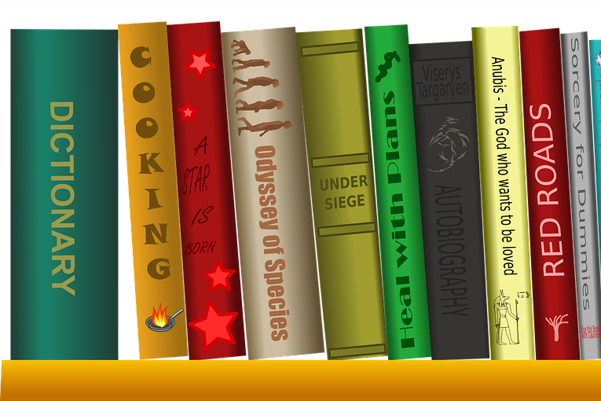
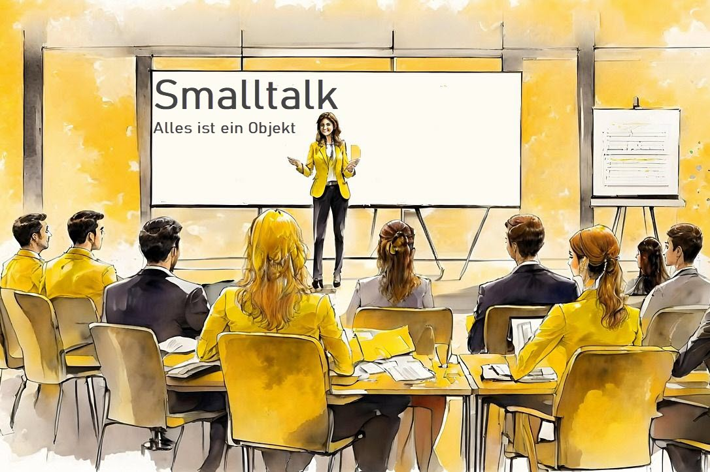

Python – Eine Sprache in aller Munde
Erfolgreicher Abschluss eines mehrwöchigen Online-Kurses in Python, inklusive praktischer Programmierübungen.
2025
Technische Details
- Sprache: Python
- Plattform: OpenHPI, CodeOcean
- IDE/Notebook: Jupyter
Byceps & Bytes
Eigenständig entwickelte Web-Applikation zur Verwaltung von Workouts, programmiert für den privaten Gebrauch.
2025
Technische Details
- Frontend: HTML, CSS, JavaScript
- Backend: C#, Python, JavaScript
- Datenbank: SQL Server, PostgreSQL
- Hosting: Azure, Render
Informatik-Lehrerin
Nebenberufliche Lehrtätigkeit in Informatik an einer Berufsfachschule – ausgebildete Berufsschullehrperson im Nebenamt.
Seit 2019
Technische Details
- Programmierung: C#, Arduino, JavaScript, Powershell, Objektorientierung
- Datenbanken: Datenmodellierung, SQL Server
- Datenverarbeitung: Codierungs-, Kompressions- und Verschlüsselungsverfahren
- Web: HTML, CSS
- Infrastruktur: Netzwerk einrichten, Arbeitsplatz einrichten, Serverdienste aufsetzen
Schulverwaltung – Ein Gymnasium voll im Griff
Verwaltung von Schüler:innen, Kursen, Noten und Zeugnissen – alle administrativen Abläufe digital abgebildet.
Seit 2006
Technische Details
- Frontend: HTML, CSS, JavaScript
- Backend/IDE: Servoy, Tomcat
- Datenbank: SAP SQL Anywhere, SQL

Zeitschriften-Verwaltung
Verwaltung von Abonnements: erwartete Ausgaben überwachen, eingetroffene Lieferungen prüfen und Rechnungen intern verbuchen.
2015-2023
Technische Details
- Frontend: HTML, CSS, JavaScript
- Backend/IDE: Servoy, Tomcat
- Datenbank: SAP SQL Anywhere, SQL
Budget-Kontrolle
Ausgaben überwachen und Rechnungen verbuchen, Budget stets im Blick.
2010-2024
Technische Details
- Frontend: HTML, CSS, JavaScript
- Backend/IDE: Servoy, Tomcat
- Datenbank: SAP SQL Anywhere, SQL
Trafimage – Die SBB-Netzkarte der Schweiz
Parsen des SBB-Fahrplans und Darstellung des georeferenzierten Verlaufs des Streckennetzes von Bahn und Bus auf der Schweizer Karte.
2008-2015
Technische Details
- Frontend: HTML, CSS, JavaScript
- Backend/IDE: Servoy, Tomcat
- Datenbank: PostgreSQL, PostGIS, SQL
ICT Professional Web SIZ
Weiterbildung im Bereich Webentwicklung und Medienbearbeitung.
2005
Technische Details
- Frontend: HTML, CSS, JavaScript
- Backend/Server: PHP, Apache Webserver
- Datenbank: MySQL
Car-Configurator
Website für einen Autoimporteur: Fahrzeugkonfiguration online beim Kauf möglich.
2000-2001
Technische Details
- Frontend: HTML, CSS
- Backend/Logik: Smalltalk

Smalltalk – Objektorientierung am Arbeitsplatz einer Grossbank
Desktop-Applikation für Mitarbeitende im KMU-Bereich zur Berechnung von Kreditrisiken und Zinsen.
1994-1999
Technische Details
- Sprache: Smalltalk
- Datenbank: Oracle